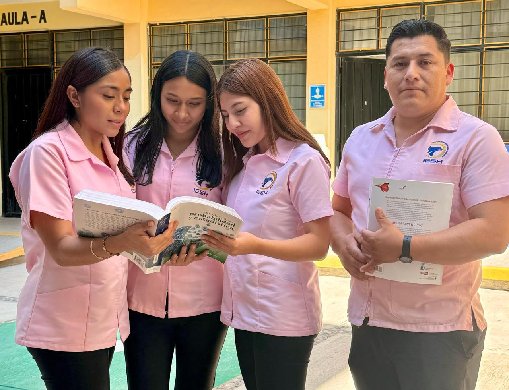
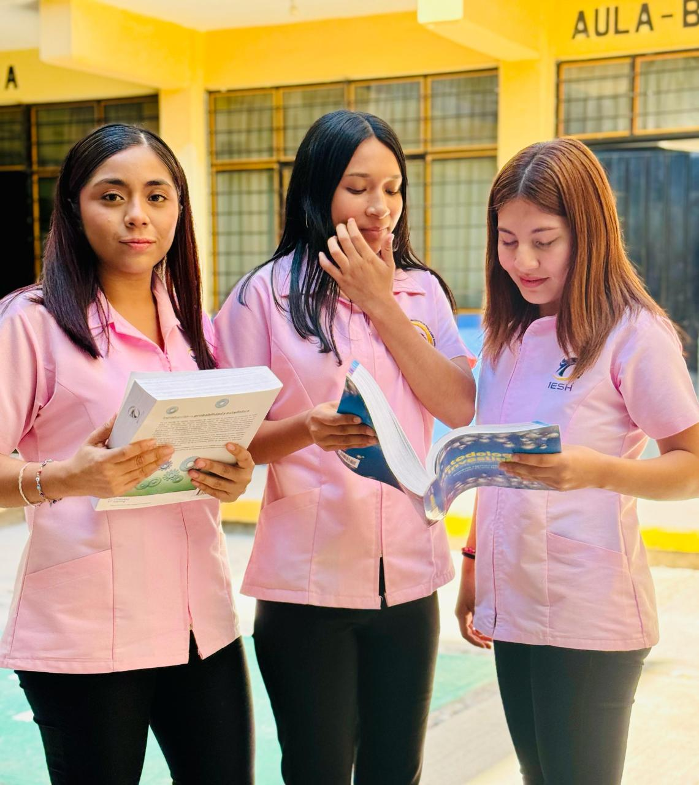
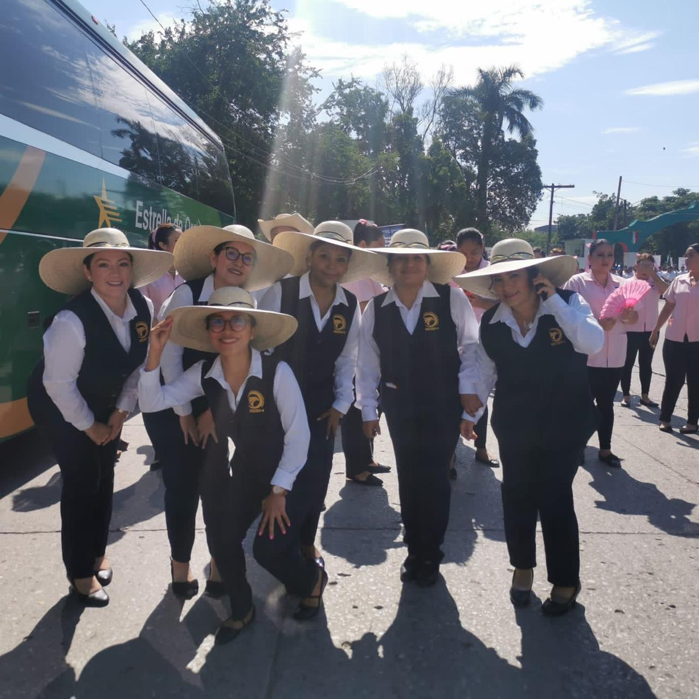

Misión
La licenciatura en Trabajo Social es un sector educativo que promueve la formación profesional de calidad que exige el sustento teórico, ético y moral de los conocimientos de quienes la ejerzan para interactuar con pertinencia y relevancia en aspectos sociales de crecimiento que logren el beneficio de una sociedad demandante de atención profesional en este ámbito.
Actualmente somos la única institución que cuenta con el laboratorio "Cámara de Gessel", en donde podrás hacer prácticas profesionales de la licenciatura.
Imágenes Destacadas


